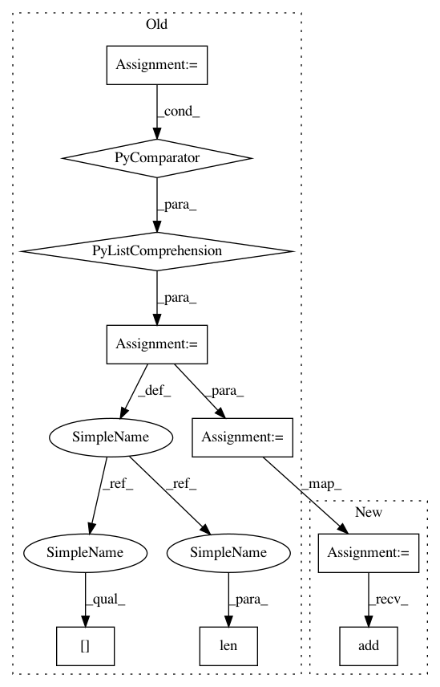

b0cd6a1df09c7157dea48265a5c21c3b7cc37399,softlearning/misc/nn.py,,feedforward_model,#Any#Any#Any#Any#Any#Any#,4
Before Change
" shapes as an input. It might be possible that you passed in a"
" list/tuple of dimension objects. Those should be accepted"
" but have not yet been implemented.")
inputs = [
tf.keras.layers.Input(shape=input_shape)
for input_shape in input_shapes
]
if len(inputs) > 1:
out = tf.keras.layers.Concatenate(axis=-1)(inputs)
else:
out = inputs[0]
for units in hidden_layer_sizes:
out = tf.keras.layers.Dense(
units, *args, activation=activation, **kwargs)(out)
out = tf.keras.layers.Dense(
output_size, *args, activation=output_activation, **kwargs)(out)
model = tf.keras.Model(inputs=inputs, outputs=out)
return model
After Change
name=None,
*args,
**kwargs):
model = tf.keras.Sequential(name=name)
model.add(tf.keras.layers.Lambda(lambda x: tf.concat(x, axis=-1)))
for units in hidden_layer_sizes:
model.add(tf.keras.layers.Dense(
units, *args, activation=activation, **kwargs))
In pattern: SUPERPATTERN
Frequency: 3
Non-data size: 9
Instances
Project Name: rail-berkeley/softlearning
Commit Name: b0cd6a1df09c7157dea48265a5c21c3b7cc37399
Time: 2018-10-29
Author: hartikainen@berkeley.edu
File Name: softlearning/misc/nn.py
Class Name:
Method Name: feedforward_model
Project Name: YerevaNN/mimic3-benchmarks
Commit Name: 7567cc646d258e40dde9790a28a9b264ccd494fb
Time: 2017-08-27
Author: harhro@gmail.com
File Name: mimic3models/split_train_val.py
Class Name:
Method Name:
Project Name: YerevaNN/mimic3-benchmarks
Commit Name: 5d353701dd56a1fc8abc15e4082e33b7bed2a241
Time: 2017-08-09
Author: harhro@gmail.com
File Name: mimic3models/split_train_val.py
Class Name:
Method Name: